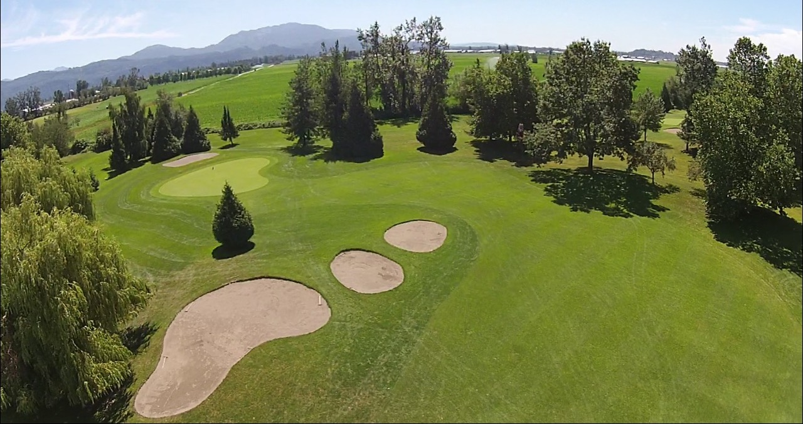
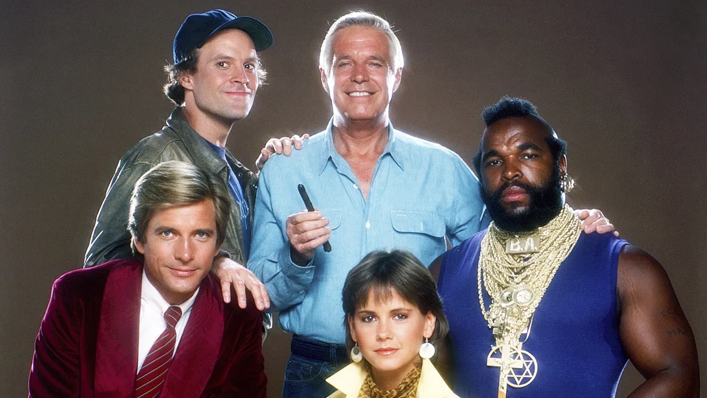
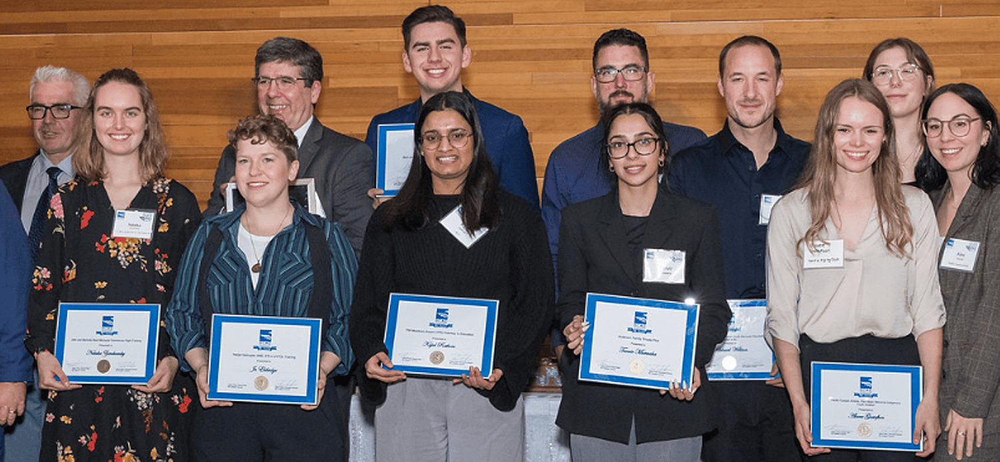
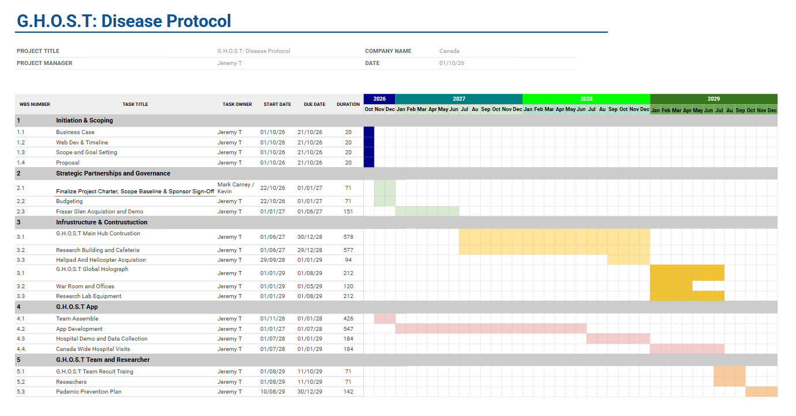

Scope
Abbotsford Will become the Central Hub of Pandemic control with our new Global Holographic Omnicidal Symptom Tracker
Currently, UFV and Abbotsford are not know for disease prevention and opening a New Rapid Response Hub will bring new careers, learning potential and Saftey to the community.
Building our new base with our live controll room featuring a new State of the art Holographic globe will be appealin visually and an incredibly useful Risk identification method to track,
Pinpoint and respond to outbreaks.
Working with the Hospitals in Canada Creating a New App for a central easy to use hub to load Hospital disease
When new symptoms or strains of new diseases they can be logged and added to the database from registered hospitals around Canada and will keep track of disease numbers
3 year Project to build
• Taking Control Fraserglen Golf Course in Abbotsford $45M
1 (Gyarmati, 2026). Converting wasted land for purpose on along the highway for status and while not disrupting the Farming Land
• G.H.O.S.T Hub ($200M)
• Research Support Building (250M and 2 Helicopters and Pads for Rapid Response ($3M)
• 10 Elite Rapid Response Team Members ($25M yearly)
• Research Team and Prevention Team 50 ($5M Yearly)
• G.H.O.S.T App for Hospital Data Collection ($100M)
What We Are Building

Fraserglen Golf course takeover for Hub Site ($45.0M)
Location: Abbotsford
What’s Included: 56 Acres of Land for multiple Strategic buildings and central G.H.O.S.T Hub
G.H.O.S.T Hub ($200.0M)
Purpose Live Global Iconic Visual Platform for Disease Data Visualization
What’s Included:
Grand Hall featuring a Large Informatic Globe.
2 Level Office Hub around the Globe
Rapid Response War Room .

Research Support Building (250M and 2 Helicopters and Pads for Rapid Response ($3M)
3 Research Buildings and Cafeteria Building

10 Elite Rapid Response Team Members ($25M yearly)
Mobile Response A-Team for ground level Assistance

Research Team and Prevention Team 50 ($5M Yearly)
Research and Disease Prevention Hub
G.H.O.S.T App for Hospital Data Collection ($100M)
Connecting Hospital Data to a central App for Tracking and Global Visualization
Timeline
Milestones
• UFV and YXX and City approval - June 1st, 2027
• Constustruction of the Hanger - July 1st, 2028
• Constustruction of the UFV Flight Simulation Wing - March 1st, 2028
• Renovation of Flight Simulation Wing and EV Loop - Jan 1st, 2029
• Cessna 172S Skyhawks arrival - Jan 1st, 2029
• UFV Aerospace & Flight Simulation Course Completion - May 1st, 2030

image credit
https://fraserglen.com/wp-content/uploads/course-page-img.jpeg
https://www.shutterstock.com/shutterstock/videos/3795116773/thumb/1.jpg?ip=x480
https://th.bing.com/th/id/OIP.lIAFMT7Eytyf7JX1N1OQhwHaE8?w=267&h=180&c=7&r=0&o=7&pid=1.7&rm=3
https://www.hollywoodreporter.com/wp-content/uploads/2023/01/The-A-Team-Cast-Photo-Everett-TSDATEA_NB011-H-2023.jpg
https://as1.ftcdn.net/jpg/08/44/57/80/1000_F_844578021_a7DfNagZPd9UaQYV8xGkgdlm7ewx9NeV.jpg